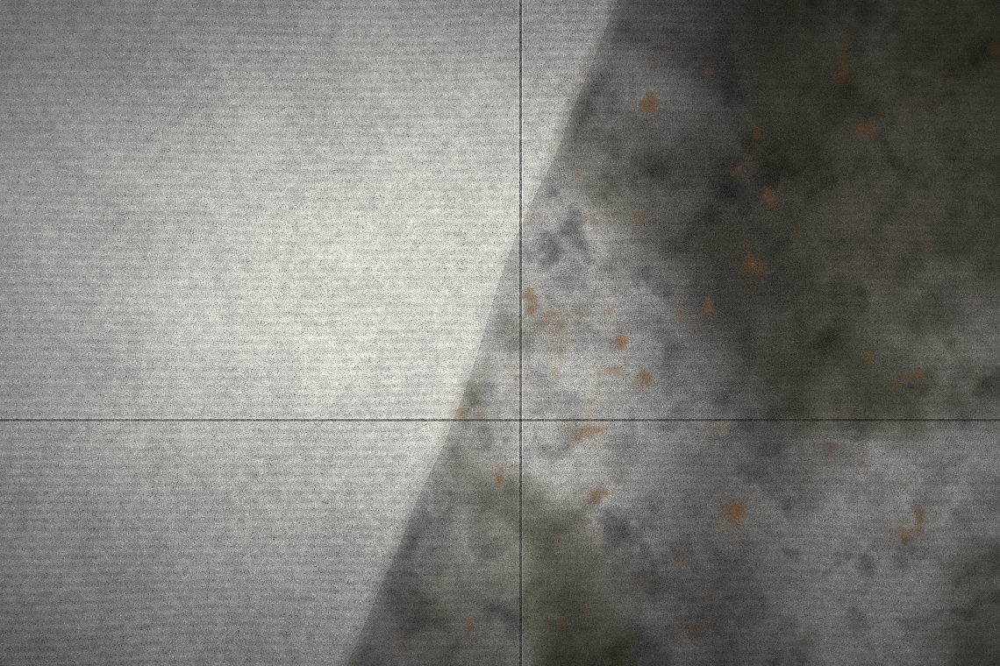
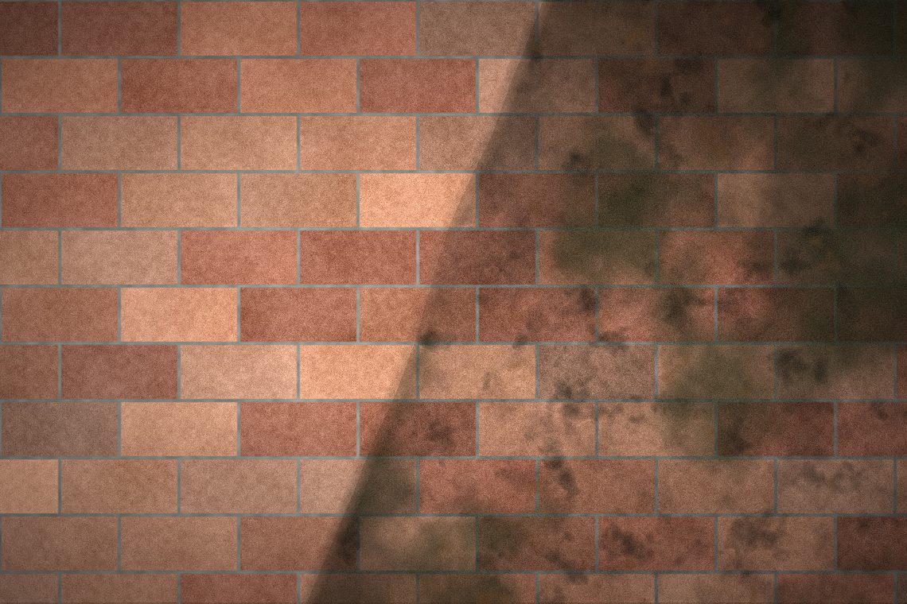

What we clean
Three services, each one done with equipment and technique matched to the surface. Every one of them comes with a free quote and photos of the finished work.
Driveway Cleaning in Southern Indiana
A driveway is the biggest single surface most people see when they pull up to your house, and it is the first thing to show its age. Concrete is porous, so dirt, tire rubber, oil, and algae work down into the surface instead of sitting on top of it. A garden hose moves that around. It takes real pressure and a flat-surface cleaner to pull it out.
We clean driveways with a rotary surface cleaner rather than a bare wand. That keeps the pressure even across the whole slab, so you get one consistent color instead of the zebra striping you see when someone waves a wand back and forth. Edges, control joints, and the apron out to the street get detailed by hand afterward, because a surface cleaner cannot reach into a corner.
What is included
- Pre-treatment on algae, moss, and organic staining
- Full flat-surface clean at the right pressure for concrete
- Hand-detailed edges, control joints, and the street apron
- Spot treatment on oil, rust, and tire marks where they will lift
- Final rinse so nothing dries back onto the slab

Walkway & Sidewalk Cleaning in Southern Indiana
Walkways collect everything: leaf tannin, mud tracked off the grass, moss in the shaded stretches, and a slick black film that builds up on the north side of a house. Beyond looking neglected, that film gets genuinely slippery when it rains.
Pavers and poured walks need different handling. On poured concrete we run the same even surface-cleaning pass we use on driveways. On pavers and brick we drop the pressure and work with the joints instead of against them, so we are not firing polymeric sand out from between the stones and leaving you with a wobbly path. Steps, thresholds, and tight corners get finished by hand.
What is included
- Pre-treatment on moss, algae, and leaf staining
- Even, striping-free cleaning across poured concrete
- Lower-pressure technique on pavers, brick, and stone
- Careful work around joints so jointing sand stays put
- Steps, landings, and thresholds detailed by hand

Gutter Cleaning in Southern Indiana
Gutter work is really two jobs, and most people only think about one of them. The functional half is clearing the trough so water actually reaches the downspout instead of overflowing behind the fascia. The cosmetic half is the black vertical striping on the outside face — that is oxidation and road film bonded to the aluminum, and no amount of rain takes it off.
We do both. Debris comes out of the trough by hand and gets bagged, not blown into your landscaping. Downspouts get flushed and checked for flow. Then the exterior face is treated with a purpose-made gutter brightener and rinsed at low pressure — high pressure on a gutter face just dents it and drives water up behind the fascia.
What is included
- Debris cleared from the trough by hand and bagged off-site
- Downspouts flushed and checked for actual flow
- Exterior face treated for oxidation and road film
- Low-pressure rinse that will not dent aluminum or force water behind fascia
- A heads-up on any loose hangers or separated seams we spot

New business. Not new to the work.
We are building this company on jobs we can point at. That means being straight with you about what comes clean, showing up when we said we would, and leaving proof behind either way.
Fully insured
Liability coverage in place before we ever put water on your property. Certificate available on request.
We actually answer
Call or text and you get a person, not a queue. Quotes go out within a day, not whenever we get around to it.
Local to Southern Indiana
We live here. This is not a franchise running a call center three states away and subcontracting your job out.
Ready to see it clean?
Free quotes across Southern Indiana. Send a couple of photos and we will get you a firm number — usually the same day.